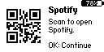

Eddy
Eddy Spotify.
Control Spotify from your Flipper while your phone plays the music.
Play your first song
Choose Spotify under Extras in the Eddy installer, then connect your phone to your Flipper once. Bluetooth pairing guide
- Open Apps → Spotify on the Flipper.
- The first time you open it, scan the QR code on the Flipper to open Spotify on your phone. Press OK on the Flipper to close the code.
- Play a song on your phone. Press OK on the Flipper to pause, or Left / Right to skip tracks.
Next time, open Apps → Spotify and play a song. Press Up whenever you want the QR code again.
On iPhone
Your Flipper shows the song title, artist and playback time from the active player. Start playback in Spotify to see its track.
On Android
Use the Flipper as a three-button remote on phones that support Bluetooth media controls. View the song title and artist on your phone.
On your Flipper


This first release has passed simulated playback tests. Pairing and reconnecting after a power cycle still need confirmation on physical phones and Flippers.
- Left
- Previous
- OK
- Play / pause
- Right
- Next